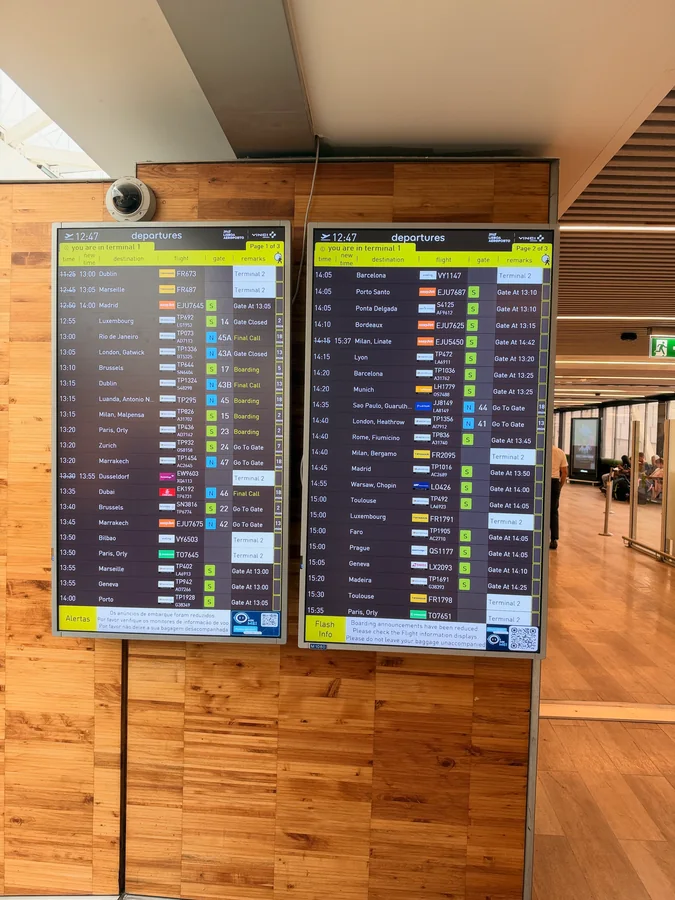

Семейная поездка
Италия
29 октября — 14 ноября 2026
Андрей, Яна и Маша
Iter
Маршрут

пройдено впереди перелёт
Dies
День за днём
- 29октябряDies I Вылет из Орландо
-

30октябряDies II Лиссабон → Рим Лиссабон · Фьюмичино · Рим -
 31октябряDies III
Рим — Ватикан
Рим · Ватикан · Замок Святого Ангела
31октябряDies III
Рим — Ватикан
Рим · Ватикан · Замок Святого Ангела
-
 1ноябряDies IV
Древний Рим
Римский форум и Палатин · Капитолий
1ноябряDies IV
Древний Рим
Римский форум и Палатин · Капитолий
-
 2ноябряDies V
Аппиева дорога и Монтекассино
Аппиева дорога · Монтекассино · Неаполь
2ноябряDies V
Аппиева дорога и Монтекассино
Аппиева дорога · Монтекассино · Неаполь
-
 3ноябряDies VI
Неаполь
Неаполь
3ноябряDies VI
Неаполь
Неаполь
-
 4ноябряDies VII
Неаполь, второй день
Неаполь
4ноябряDies VII
Неаполь, второй день
Неаполь
-
 5ноябряDies VIII
Помпеи и Аджерола
Помпеи · Аджерола
5ноябряDies VIII
Помпеи и Аджерола
Помпеи · Аджерола
-
 6ноябряDies IX
Амальфи
Аджерола · Амальфи
6ноябряDies IX
Амальфи
Аджерола · Амальфи
-
 7ноябряDies X
Геркуланум и Орвието
Геркуланум · Орвието
7ноябряDies X
Геркуланум и Орвието
Геркуланум · Орвието
-
 8ноябряDies XI
Порано, Чивита, Больсена
Порано · Чивита-ди-Баньореджо · Больсена
8ноябряDies XI
Порано, Чивита, Больсена
Порано · Чивита-ди-Баньореджо · Больсена
-
 9ноябряDies XII
Лошади, термы, Орвието
Орвието
9ноябряDies XII
Лошади, термы, Орвието
Орвието
-
 10ноябряDies XIII
Монтефьясконе и Тускания
Орвието · Монтефьясконе · Каподимонте · Тускания
10ноябряDies XIII
Монтефьясконе и Тускания
Орвието · Монтефьясконе · Каподимонте · Тускания
- 11ноябряDies XIV Тарквиния и термы Витербо Тускания · Тарквиния · Термы Витербо
- 12ноябряDies XV Тарквиния и термы Витербо Тускания · Тарквиния · Термы Витербо
- 13ноябряDies XVI Фьюмичино — Лиссабон Тускания · Фьюмичино · Лиссабон
- 14ноябряDies XVII Домой Лиссабон
Vox
Аудиорассказы
10 ноября · Монтефьясконе и Тускания
В дороге. Часть 1
Запись появится позже.
В дороге. Часть 2
Запись появится позже.
В дороге. Часть 3
Запись появится позже.
В дороге. Часть 4
Запись появится позже.
Pictura
Фильм
Скоро
Фильм о поездке монтируется отдельно.